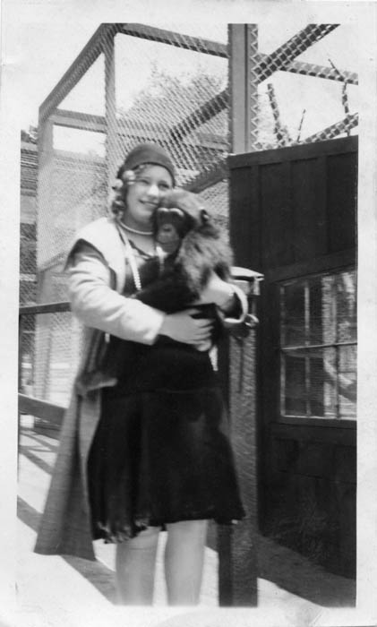
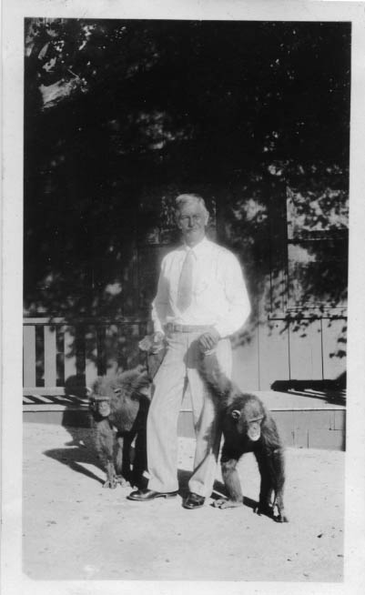

Featherhill Ranch, Montecito, California

Angeline “Peggy” Rechner Smoot and Furry Friend
circa, 1930s, at Featherhill Ranch

Carl Rechner (Peggy’s father) and Furry Friends
circa, 1930s, at Featherhill Ranch
| Featherhill Ranch was owned by Christian Holmes.
Mr. Holmes was a Max Fleischmann (Fleischmann's Yeast) family member. The ranch was located in Montecito just
south of Santa Barbara, California. In the late 1920s Mr. Holmes developed a small zoo, aka menagerie. The
zoo was dissolved in the 1930s, most animals were sent to the new Fleishhacker Zoo, now called San Francisco Zoo. Marvin Smoot worked part time at the Chris Holmes Featherhill Ranch Zoo in the late 1920s and early 1930s. Marvin built and maintained animal enclosures, he and Peggy would hang out there. Both were animals lovers. Chris Holmes was married to Katherine McDonald, a silent screen star. I have read that a tiger from the zoo escaped its cage and killed her son. The son is thought to be Brit Johnson from Katherine’s previous marriage to Charles S. Johnston. Chris Holmes and Katherine divorced in 1931, said to be a nasty divorce. One animal did not make it to Fleishhacker Zoo, a spider monkey went to live with Peggy and Marvin. The critters in photos looks like chimpanzees and none would be the spider monkey of course. Peggy’s spider monkey was given the name Cleo (Cleopatra). |